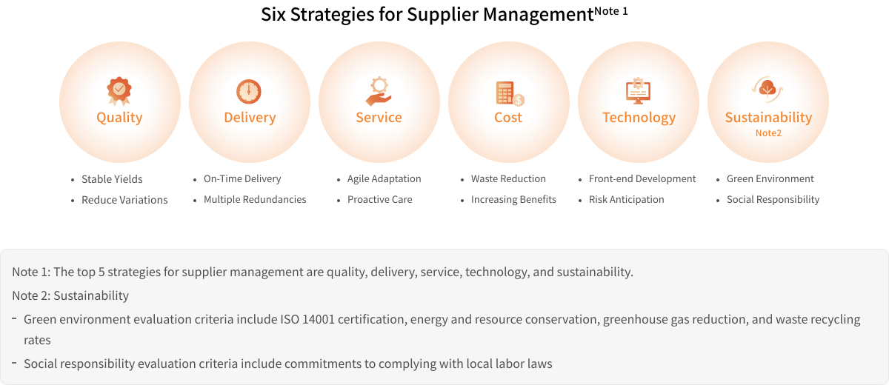
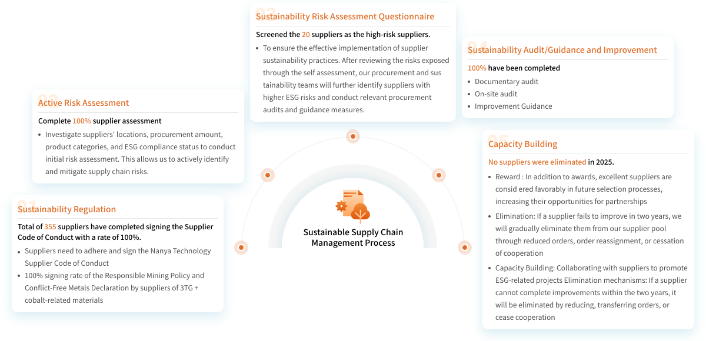
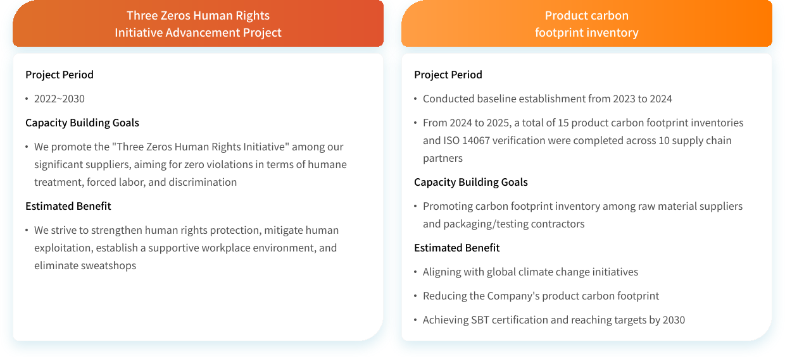
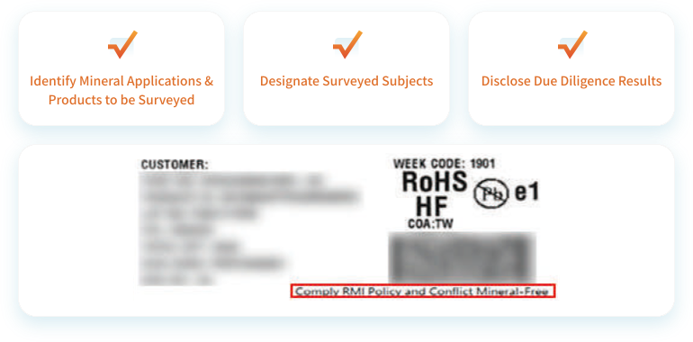
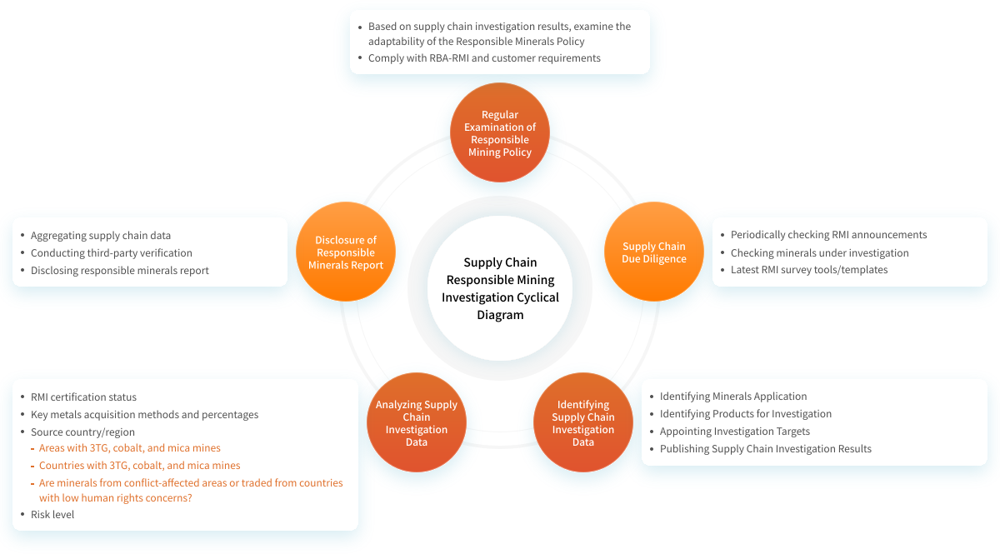
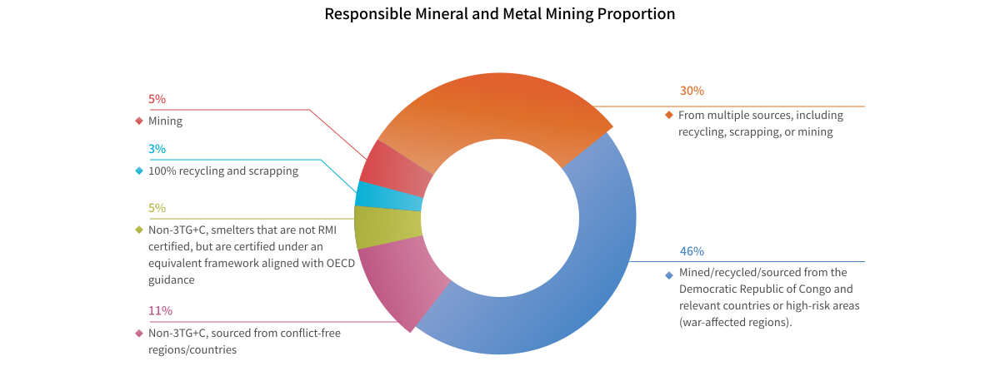

PROCUREMENT
Responsible Procurement A Promoter of Shared Value
Suppliers have always been Nanya's most important business partners. We aim to enhance cooperation to create greater value and share the value and benefits of cooperation and create a sustainable future.

- From 2019 to 2024, the refund for blue-collar migrant workers regarding items such as brokerage fees, transportation fees, service fees, medical examination fees NT$ 110.78 million
- Among suppliers of 3TG metals (tin, tantalum, tungsten, gold), cobalt, and mica, the number of smelters recognized by the RMI in supplier reports 255 smelters
- Among suppliers of strategic metals subject to international import/export restrictions (aluminum, copper, nickel, and zinc), the number of smelters recognized by the RMI in supplier reports 29 smelters
Strategy and Performance of Material Topics
 Sustainable Supply Chain Management
Sustainable Supply Chain Management
Sustainable Supply Chain Management Strategy
Nanya Technology's screening criteria for direct production material suppliers mandate not only ISO 9001 and ISO 14001 third-party verification but also rigorous internal evaluations. Utilizing an electronic supplier evaluation management system, we assess suppliers across six key aspects: quality, delivery, service, cost, technology, and sustainability. The sustainable management indicator (sustainability) accounts for 19% of the overall score, ensuring suppliers meet our requirements for sustainable supplier management. Furthermore, once a supplier is selected, we conduct audits to confirm the effective implementation of their sustainable management practices.

-
 Sustainable Supplier Risk Management
Sustainable Supplier Risk ManagementImplement risk assessment through self-evaluation questionnaires for suppliers, and strengthen supplier risk management through audits and improvement tracking.
-
 Supplier Cooperation and Exchange
Supplier Cooperation and ExchangePeriodically organize supplier conferences and supplier evaluations on the basis of cooperation and mutual aid, and provide guidence for suppliers to increase social, economic, and environmental benefits, in order to achieve sustainable development of suppliers.
-
 Improve the Sustainability of Suppliers
Improve the Sustainability of SuppliersNanya pays attention to environmental and social sustainability issues while pursuing economic benefits, and continues to work with suppliers in projects related to sustainability.
-
 Responsible Mineral Procurement
Responsible Mineral ProcurementNanya is committed to a responsible procurement management strategy for the ban on conflict minerals to satisfy current and future market, legal, and regulatory expectations.
Sustainable Supply Chain Management Process
Nanya Technology has established a comprehensive supply chain management procedure. We ensure our suppliers meet our standards and requirements through a cycle involving five key processes: sustainability regulation, active risk assessment, sustainability risk assessment questionnaire, sustainability audit/improvement guidance, and supplier capability building. Through risk assessment and audits, we monitor the risk level of our supply chain and guide suppliers to improve and build capacity, gradually strengthening the sustainability performance of the supply chain.

Supply Chain Sustainability Projects
In response to changes and updates to sustainability trends, Nanya Technology Corporation will continue to improve supplier sustainability through seminars and project guidance, which raise suppliers' awareness and ability to achieve sustainability.

 Improve the Sustainability of Supply Chains
Improve the Sustainability of Supply Chains

2024 Nature and Climate Synergy Supply Chain Workshop
Sustainable Development Mutual Benefit Initiative
Recognizing TNFD as an emerging risk and financial disclosure framework, Nanya Technology hosted a "Nature and Climate Co-prosperity Supply Chain Workshop" on November 26, 2024. Approximately 30 suppliers, from industry sectors ranging from chemical manufacturing to electronics and plastic products, sent their climate and nature specialists to participate. This initiative aimed to deepen suppliers' understanding of environmental sustainability issues and strengthen nature and climate strategy management in the upstream supply chain.
During the workshop, experts from National Taiwan University of Science and Technology and National Taipei University of Technology were invited to present on theories and practices of climate and nature sustainability management. The sustainability team of our supplier, Formosa Advanced Technologies, also gave a talk about their projects on decarbonization and biodiversity under the theme "The Best Energy Is Energy Saving," showcasing case studies of energy-saving projects that reduced energy use and carbon emissions in production. This talk not only vividly introduced practical energy-saving experience but also strengthened collaboration across the value chain.
 Responsible Mineral Sourcing Management
Responsible Mineral Sourcing Management
Nanya Technology is committed to managing conflict-free minerals and implementing a responsible procurement strategy. We actively manage the responsible procurement of tantalum, gold, tin, tungsten, and cobalt to meet current and future market expectations as well as legal and regulatory requirements. We have also published a Responsible Mineral Sourcing Policy to align with the requirements for responsible metal procurement, uphold our responsibilities as part of the Responsible Business Alliance (RBA), and achieve the goals of the Responsible Minerals Assurance Process (RMAP). Since 2022, Nanya Technology has added the statement "Comply with RMI Policy and Conflict Mineral-Free" to its product labels, declaring that the company's products meet the mandate of the Responsible Minerals Initiative (RMI) and are free from conflict minerals.


Result of Responsible Mineral Procurement Due Diligence
As a DRAM supplier, Nanya Technology conducted due diligence on its supply chain. After comparing its findings with the Responsible Minerals Initiative (RMI) qualified smelter list, 284 smelters or suppliers were identified in the 2024 supply chain investigation.Among them, 255 smelters or suppliers reported information concerning the gold, tantalum, tin, tungsten, cobalt, and mica currently used in our company's product supply chain. Approximately 27.5% (78) of these smelters reported that their mineral sources might originate from the Democratic Republic of Congo or adjoining countries, or from recycled/scrap metals. According to supply chain reports, these 78 smelters have all confirmed that their mineral sources comply with the Responsible Minerals Assurance Process (RMAP) policy requirements and have been approved as legitimate smelters by the Responsible Minerals Initiative (RMI).

Explore the full story here
Download
 ESG News
ESG News
 Facebook
Facebook